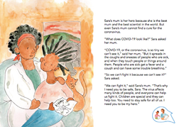
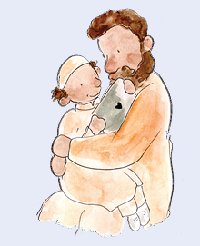

Understanding the Guide
The adults will read the storybook with the children and at each they will lead a CHAT about the lessons in that section of the storybook. These tools are available to assist the adult to lead each CHAT. There are 4 tools:
THE ARIO News
This newspaper offers guidance to all adults about how to CHAT with the children.
Key CHAT messages
These are the overall themes or messages for each CHAT.
As example: CHAT 1: Staying healthy.
10As you read the storybook, the messages in this Guide follow the themes in the story.
Let’s CHAT
This is information for adults about what to share with children during this CHAT.
ASK the children
These are specific questions adults ask the children to lead into this CHAT.
Throughout the storybook, children are encouraged to be heroes and citizens of the world whose actions form a global chain through which all people protect each other. During CHATs, adults promote this message of responsibility and action. Children are engaged about how to make choices and keep themselves and those they love safe and thereby giving them feelings of hopefulness and possibility.
READY: IT’S TIME TO START TO READ AND CHAT
As you open the storybook, this is said by adults FIRST.
Adults CHAT with Children:
I know you have heard lots of talk all around you about the coronavirus. The coronavirus has changed our lives, so it is important for us to CHAT about it. This storybook was written to help us CHAT and share our feelings about the coronavirus and how our world has changed. It will give us ideas about how we can stay healthy and be responsible to protect ourselves and others from the coronavirus. Ready to listen and CHAT?
> Read this page of My Hero is You

11